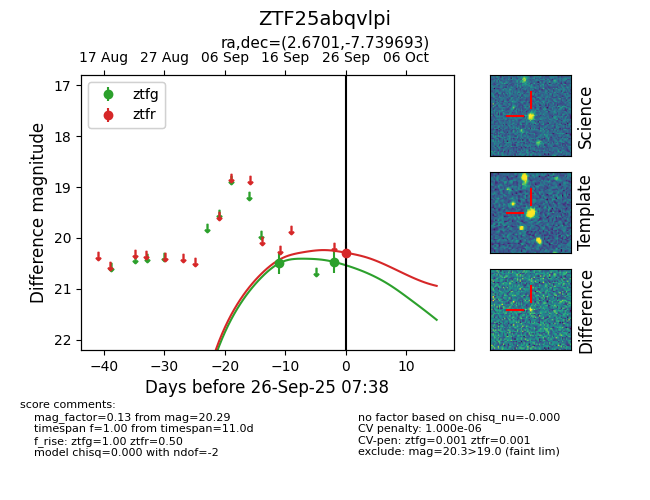
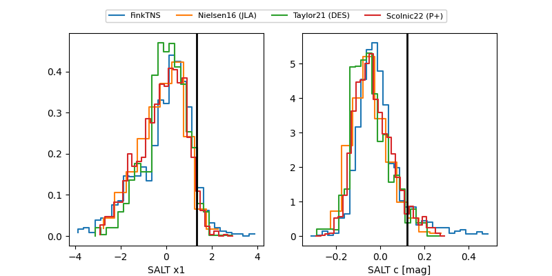

FINK: ZTF25abqvlpi
Lasair: ZTF25abqvlpi
ALeRCE: ZTF25abqvlpi
ZTF25abqvlpi (ztf,fink)
equatorial (ra, dec) = (2.6701,-7.73969)
galactic (l, b) = (94.5802,-68.33842)


last ztfg=20.47, ztfr=20.29
2 ztfg, 1 ztfr detections